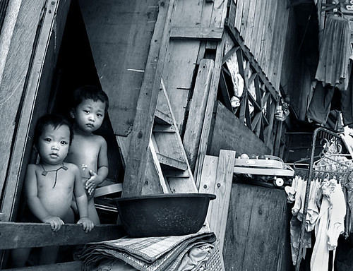

Qué está pasando realmente
Pregúntale a cualquier persona filipina cuántos primos tiene, y es muy probable que la respuesta supere fácilmente la treintena, a veces incluso la cincuentena, sin que eso genere ningún tipo de sorpresa en la conversación. Reuniones familiares de cien personas o más para un cumpleaños, un bautizo o una fiesta patronal local son completamente normales, y no se trata solo de una cuestión numérica: en Filipinas, la familia extendida —tíos, primos, abuelos, padrinos y hasta vecinos de toda la vida— funciona como una red activa de apoyo emocional, económico y práctico que sostiene la vida cotidiana de una manera que sorprende a quienes vienen de culturas más centradas en el núcleo familiar reducido.
Esta estructura familiar extendida y profundamente unida tiene raíces que combinan tradiciones prehispánicas del archipiélago con siglos de fuerte influencia católica, introducida durante más de trescientos años de colonización española. El catolicismo filipino, practicado por la gran mayoría de la población, reforzó valores como la lealtad familiar, el respeto a los mayores y la responsabilidad colectiva hacia los parientes, mientras que instituciones religiosas como el compadrazgo —el sistema de padrinos de bautismo y confirmación— ampliaron todavía más la red familiar, incorporando a personas sin lazos de sangre directos como miembros funcionales de la familia extendida.
Un concepto central para entender esta dinámica es el llamado utang na loob, una expresión tagala que se traduce aproximadamente como "deuda interior" o "deuda del alma", y que describe una obligación moral profunda de reciprocidad hacia quienes te han ayudado, especialmente dentro de la familia. Este principio no se percibe como una carga negativa, sino como el tejido invisible que mantiene unida a la comunidad familiar: quien recibió apoyo durante su infancia o juventud —para estudiar, para instalarse en la ciudad, para salir de una dificultad económica— asume naturalmente, con el tiempo, la responsabilidad de devolver ese apoyo a otros miembros de la familia que lo necesiten después.
En tagalo existe la palabra "kapamilya", que combina "familia" con la idea de pertenecer literalmente a ella: no ser pariente, sino ser parte.
De dónde viene todo esto
Esta lógica de reciprocidad se manifiesta de forma muy concreta en un fenómeno económico y social enorme dentro de Filipinas: las remesas enviadas por los millones de trabajadores filipinos migrantes repartidos por todo el mundo, conocidos cariñosamente como Overseas Filipino Workers (OFW). Estos trabajadores, que representan una parte significativa de la economía nacional filipina, suelen enviar dinero de forma regular no solo a sus padres e hijos directos, sino a una red mucho más amplia de familiares extendidos, financiando estudios de sobrinos, gastos médicos de tíos o la construcción de la casa familiar donde vivirán varias generaciones bajo un mismo techo al mismo tiempo.
De hecho, es extremadamente común en Filipinas que varias generaciones —abuelos, padres, hijos adultos y nietos— convivan bajo el mismo techo, no necesariamente por falta de recursos económicos para vivir por separado, sino porque culturalmente se espera y se valora ese acompañamiento constante entre generaciones. Enviar a un padre o abuelo anciano a una residencia para mayores, práctica normalizada en muchos países occidentales, se percibe en gran parte de la sociedad filipina como algo casi impensable, una falta grave al deber filial que rige profundamente las relaciones familiares tradicionales.
Más allá de lo básico
Este calor familiar se extiende, además, más allá de los lazos de sangre estrictos: es común que amigos muy cercanos de toda la vida sean tratados e incorporados socialmente como parte de la familia extendida, llamados incluso "tío" o "tía" por respeto y cariño aunque no exista ningún parentesco real. El propio idioma tagalo tiene una palabra específica para expresar esta idea de pertenencia colectiva: kapamilya, que combina la raíz "familia" con el prefijo "kapwa", relacionado con la idea filipina de compartir una identidad común con el otro, de no verse a uno mismo como completamente separado de la comunidad que lo rodea.
Una de las expresiones cotidianas más visibles de esta devoción familiar es la caja balikbayan: grandes cajas de cartón llenas de productos, golosinas y regalos que los trabajadores filipinos en el extranjero envían a casa, a veces con meses de antelación a una visita, para parientes de toda la familia extendida. Existen negocios enteros dedicados solo a consolidar y enviar estas cajas de forma económica, y su llegada suele tratarse como un pequeño evento familiar en sí mismo, abierto en conjunto con verdadera emoción por el chocolate extranjero, zapatos de marca o vitaminas que en Filipinas resultan más caros.
La cultura filipina de padrinazgo, o compadrazgo, lleva el principio de familia extendida todavía más lejos: es común que un bautizo o una boda tengan no uno o dos padrinos, sino una docena o más, cada uno con la expectativa de jugar un papel activo en la vida del niño o de la pareja de ahí en adelante. Lejos de ser una formalidad simbólica, aceptar ser padrino conlleva obligaciones sociales reales y duraderas: otro hilo más en la densa red de apoyo mutuo que define la vida familiar filipina.

Qué debes saber si viajas
Si vas a pasar tiempo con una familia filipina, esto ayuda:
- Espera que las reuniones incluyan un círculo amplio de familiares: no te sorprendas por decenas de "tíos" y "tías" que no son parientes de sangre.
- Si te invitan a una fiesta o un bautizo, llevar un pequeño regalo para la familia se agradece, incluso siendo invitado de un invitado.
- Enviar regalos a casa es una forma de cuidado muy respetada: no subestimes la tradición de la caja balikbayan si le regalas algo a amigos filipinos en el extranjero.
- Que te pidan ser padrino es un honor con responsabilidades reales y duraderas: piénsalo bien antes de aceptar.
- A los mayores se les suele saludar con el "mano", presionando suavemente su mano contra tu frente: un pequeño gesto que vale mucho con las familias filipinas.
El panorama completo
Al final, lo que revela esta estructura familiar tan extendida y unida no es solo una preferencia cultural por las reuniones numerosas o las celebraciones ruidosas, sino un sistema social completo construido alrededor de la idea de que nadie debería enfrentar las dificultades de la vida completamente solo. En un archipiélago de más de siete mil islas, donde la geografía misma podría fácilmente fragmentar a las comunidades, Filipinas construyó, generación tras generación, una de las redes familiares más sólidas y extensas del mundo, sosteniendo no solo la economía del país, sino también, y quizás sobre todo, su tejido emocional colectivo.
¿Tienes curiosidad por saber cómo culturas cercanas manejan reglas parecidas? No te pierdas nuestros artículos sobre La fiesta que le canta a la muerte en vez de temerle y La bombilla que pasa de boca en boca sin que nadie se incomode.